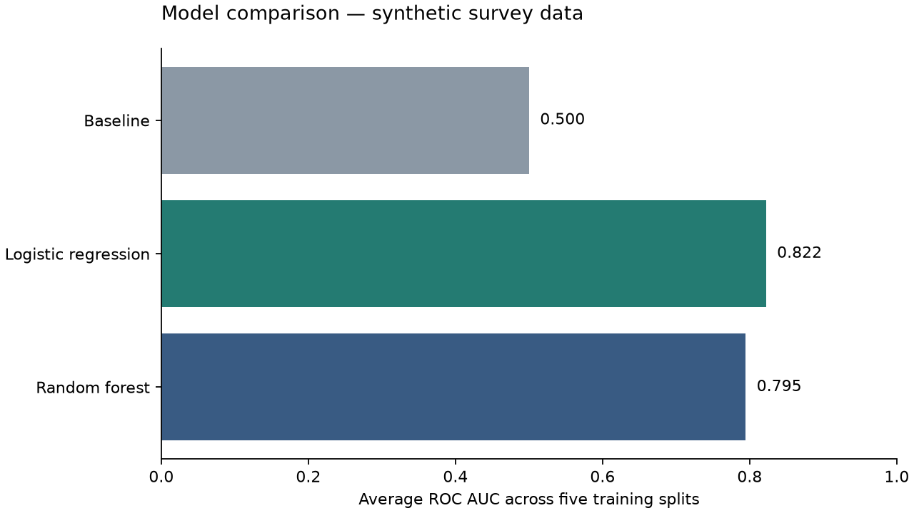

Keep experiments comparable
Trying another model often means changing preparation code, model settings, and evaluation code in several places. That makes it harder to explain which changes produced a result.
My project moves the experiment choices into one YAML settings file. Python reads those choices, builds the preparation and prediction steps, and records settings and scores with MLflow, a tool for keeping an experiment history.
From settings to a saved model
- Load a table and apply configured row filters.
- Reserve 20% of records for testing.
- Fill missing numerical values and standardise their scale. Convert categories into numerical columns.
- Compare three models across five splits of the training data.
- Train each complete pipeline and evaluate it on the reserved test records.
- Save models, scores, settings, and diagrams in MLflow.
A pipeline keeps preparation and prediction together. Loading the saved model also restores the preparation steps, so new records follow the same process.
models:
- DummyClassifier
- LogisticRegression
- RandomForestClassifier
models_params:
- strategy: most_frequent
- max_iter: 1000
random_state: 42
- n_estimators: 100
max_depth: 6
random_state: 42
n_jobs: 1The baseline always predicts the most common outcome. Logistic regression learns a weighted relationship between inputs and the outcome. Random forest combines predictions from multiple decision trees.
What is automatic, and what do I choose?
The settings file describes the experiment. I choose the data source, the outcome to predict, the preparation steps, the models, and each model’s settings. The program then carries out the same preparation, training, evaluation, and recording procedure for every listed model.
For example, adding a random forest to the model list makes the runner create that model, test it across the training splits, fit it on the full training portion, and save its results. I do not need to copy a training script or manually create a separate experiment record.
The supported models and preparation steps are registered in the Python code. Settings choose among those supported components. This keeps the example easy to inspect: each name in the file corresponds to an explicit implementation.
| I choose | The program carries out |
|---|---|
| CSV or SPSS file and target column | Load records, apply row rules, separate inputs from the outcome, and reserve test records. |
| Numeric and categorical preparation steps | Build a reusable pipeline and learn its preparation settings inside each training split. |
| Models and their settings | Run the same five-split evaluation, fit each model, and calculate the same scores. |
| A complete experiment configuration | Create a parent MLflow run, add one child run per model, and save the configuration and comparison. |
This version automates the experiment procedure. It does not search for the best settings, automatically pick a winning model, schedule retraining, or deploy predictions. Those decisions remain visible and deliberate.
How the preparation settings are read
The example has two preparation branches. Numeric columns go through median replacement and scaling. Text categories go through most-common-value replacement and encoding. The settings lists use matching positions: the first name, component, parameters, column selection, and type describe the first branch.
pipeline_steps_names:
- numeric
- categorical
pipeline_steps:
- NumericPreprocessor
- CategoricalPreprocessor
pipeline_steps_params:
- {}
- {}
pipeline_steps_columns:
- numeric
- categorical
pipeline_steps_type:
- transformer
- transformerThe lists must have matching lengths. Empty parameter dictionaries mean the component uses the defaults written in Python. Choosing columns by type lets the same example handle numeric ratings and the text shopping channel without listing every input by hand.
A public example with fictional responses
The repository includes 1,000 synthetic survey responses. Each contains age, monthly visits, satisfaction, value rating, shopping channel, and whether the fictional respondent would recommend a service.
I generated recommendation probabilities from satisfaction, value, visits, and channel, then added randomness when drawing outcomes. Age is an unrelated input. Some ratings are missing so the example exercises missing-value handling.
The data contains no real respondents or client observations. A fixed random seed recreates the same CSV. Results show whether the software works on this invented problem; they do not establish performance on a real survey.
What makes an experiment reproducible?
A score alone is not enough to repeat an experiment. Someone else needs the same input records, preparation rules, model settings, evaluation procedure, and software. This demonstration makes those ingredients available together.
1. The same fictional records
The included CSV lets a reader start immediately. The generator also recreates it using seed 42. A seed fixes the starting point of the random-number generator: the same code and compatible numerical software produce the same sequence of random draws.
The generator samples age, visits, ratings, and channel, calculates a recommendation probability, then draws a two-group outcome. It intentionally introduces missing ratings. The automated data check compares two generated tables for exact equality, including their missing values.
2. The same split and model choices
The 80/20 split uses seed 42 and keeps similar proportions of positive and negative outcomes in both portions. Within the 800 training records, five shuffled splits use the same seed. Each round trains on 640 records and evaluates on 160; the 200 reserved test records stay outside that process.
Logistic regression and random forest also receive explicit random seeds. The forest uses one worker in this small example. The settings file records the model parameters, while the code fixes the split and evaluation procedure.
3. Preparation belongs inside training
Suppose a satisfaction rating is missing. Its replacement median must come from the records available for training, not from the records used to judge the model. Otherwise, evaluation data would influence the fitted process before evaluation begins.
The preparation pipeline sits inside the classifier passed to cross-validation. Each round therefore learns its own medians, scales, and categories from that round’s training portion. After evaluation, the complete pipeline is fitted again using all 800 training records. The test portion never supplies those learned preparation values.
4. Record the recipe and its output
The parent run stores the YAML file and training/test row counts. Each model run stores its name, supplied settings, scores, fitted pipeline, model input description, and diagram. The repository fixes the direct dependency versions used by the example, and the saved model includes dependency instructions.
Reproducibility still has practical limits. Python, operating system, and indirectly installed dependency versions can differ. The demo does not preserve a full machine image, data hash, or source commit identifier inside every run. Its documented scores are a verified reference for this synthetic example, not a promise of identical floating-point output on every computer.
MLflow turns individual runs into an experiment history
MLflow is the record book for this workflow. The Python runner does the model training; MLflow stores what was tried and what came out. Its browser viewer lets me inspect those records without searching through terminal output or remembering which settings I used.
Recording works locally without a running web server. Training writes to the ignored mlruns/ directory. I start the viewer when I want to explore those records. Each execution adds new runs; repeating an experiment does not replace the previous MLflow record. The convenient CSV and diagram files in results/, however, are overwritten by the latest run.
One parent run, three model runs
Automatic_Pipelines_Demo
└── synthetic_survey.csv ← one execution
├── DummyClassifier ← baseline
├── LogisticRegression ← linear classifier
└── RandomForestClassifier ← tree ensembleThe parent run connects the models evaluated together. Its saved configuration is the experiment recipe. The child runs hold model-specific details, making it easier to compare models under the same data split and preparation procedure.
| Record | Where it appears | Why it helps |
|---|---|---|
| Configuration file | Parent run files | Recover the requested data source, filters, preparation steps, and model settings. |
| Training/test counts, seed, and data-kind label | Parent parameters and tags | Recognise the split sizes and distinguish the synthetic demonstration. |
| Model name and supplied parameters | Child parameters | See which model and choices produced the scores. |
| CV and test accuracy, F1, and ROC AUC | Child metrics | Compare the same measurements across models and executions. |
| Fitted preparation and classifier | Child model files | Reload the prediction process without rebuilding its learned preparation. |
| Pipeline HTML and comparison CSV | Child and parent saved files | Inspect the processing structure and export the numerical comparison. |
Reading a run in the viewer
- Start the viewer using the commands below, then open
http://127.0.0.1:5001. - Select the
Automatic_Pipelines_Demoexperiment. Find the parent run namedsynthetic_survey.csvand its associated model runs. - Open the logistic regression run. Inspect parameters such as
max_iterand metrics such ascv_roc_aucandtest_accuracy. - Inspect saved files, called artifacts in MLflow. The model folder contains the fitted pipeline and loading information; the HTML file describes its structure.
- Return to the run list and compare the model runs. Compare training-split scores first, keeping the baseline visible.
Run IDs distinguish repeated executions even when the displayed names match. Saving the parent configuration matters because a model’s parameter list alone does not describe every data filter or preparation choice.
A small change becomes a traceable experiment
Imagine I want to see whether limiting tree depth changes the random forest’s behaviour. I copy the existing configuration into another file and change max_depth from 6 to 3. Every other choice stays the same.
cp config/config.yml config/shallow-forest.yml
# Edit max_depth to 3 in the copied file.
./.venv/bin/python src/model_selection.py --config config/shallow-forest.ymlThe runner evaluates all models listed in that copied configuration. MLflow creates another parent run and another set of model runs. The forest runs record different depth parameters; their saved parent configurations explain the complete experiment.
I can then compare average training-split ROC AUC, accuracy, and F1 between the two forest runs. A change in one score may come with a trade-off in another. The example does not automatically declare one run best.
This is the useful part of experiment tracking: a result remains connected to a recorded choice. If I also change data or preparation, the saved configuration helps explain why that comparison is no longer just a change in tree depth.
Results from a complete run
The verified run used 800 training records and 200 test records. The chart compares the average ability to rank positive outcomes across five training splits. A ROC AUC of 0.5 indicates chance-level ranking.

| Model | CV ROC AUC | Test accuracy | Test F1 | Test ROC AUC |
|---|---|---|---|---|
| DummyClassifier | 0.500 | 0.560 | 0.000 | 0.500 |
| LogisticRegression | 0.822 | 0.790 | 0.756 | 0.873 |
| RandomForestClassifier | 0.795 | 0.780 | 0.741 | 0.878 |
Accuracy measures correct predictions. F1 balances finding positive outcomes with avoiding false positives. The baseline scores zero F1 because it predicts no positive outcomes.
Use training-split scores to compare models. Test scores provide an illustrative final check; repeatedly changing settings based on them would weaken their independence.
Keep the demonstration small and reproducible
Preparation is learned within each training split. Test records do not influence the medians used to fill missing values or the numbers used for scaling. The target column is removed from model inputs.
Two automated checks passed: synthetic data generation is repeatable, and the complete workflow saves models that reload and predict successfully. Checks also verify training-only medians and prediction with missing values and unseen categories.
This public version focuses on the working command-line workflow. Earlier exploratory notebooks, an unfinished browser form, and an optional AI query experiment are excluded. Training runs locally; the portfolio page presents a recorded demonstration.
Run the complete demonstration
Use Python 3.11. The public repository includes the synthetic CSV, generator, configuration, source code, tests, and recorded reference scores. No account, API key, or private dataset is required.
git clone https://github.com/RuddiRodriguez/automatic-pipelines-demo.git
cd automatic-pipelines-demo
python3.11 -m venv .venv
./.venv/bin/python -m pip install -r requirements.txt
./.venv/bin/python src/model_selection.pyThe last command prints a model comparison and creates local MLflow records. Open results/comparison.csv for the same scores in a table, or the model-specific HTML files to inspect preparation and prediction steps.
./.venv/bin/python -m mlflow ui \
--backend-store-uri ./mlruns \
--host 127.0.0.1 \
--port 5001Visit http://127.0.0.1:5001. The viewer reads the same local records written during training. Press Control+C in its terminal to stop it. Training and viewing are separate actions; you can inspect completed runs later without training again.
./.venv/bin/python src/generate_demo_data.py
./.venv/bin/python -m unittest discover -s tests -vExplore the public repository → · Read setup instructions → · Inspect the recorded scores →
Reuse the saved prediction process
A trained classifier expects the same numerical representation used during training. Saving only the final classifier would leave me responsible for remembering the missing-value replacements, scaling, and category encoding.
This workflow saves the complete pipeline. Loading it restores both preparation and prediction. I supply a table with the original input columns; the pipeline prepares that table before predicting.
from pathlib import Path
import mlflow
import pandas as pd
mlflow.set_tracking_uri(Path("mlruns").resolve().as_uri())
model = mlflow.sklearn.load_model("runs:/RUN_ID/model")
records = pd.read_csv("examples/synthetic_survey.csv")
inputs = records.drop(columns="would_recommend").head(5)
predictions = model.predict(inputs)The tests reload every model and check that predictions work with missing numeric values and a shopping channel unseen during training. Unknown categories are handled by the encoder’s configured rule. That check establishes usable saved models for this example; it is not a deployed prediction service.
What I would change for another dataset
I would identify an appropriate outcome, review whether each input is available at prediction time, choose suitable filters, and adapt the preparation rules. This example expects a two-group outcome encoded as 0 and 1. A different kind of prediction problem would need corresponding changes to models and evaluation.
For a real project, I would also review the split strategy. Records from the same person, or observations ordered through time, can require grouping or time-based evaluation rather than the random split used here.